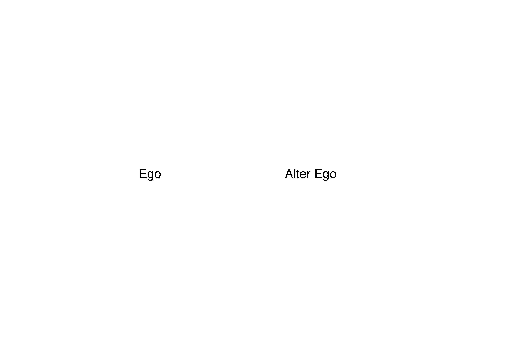
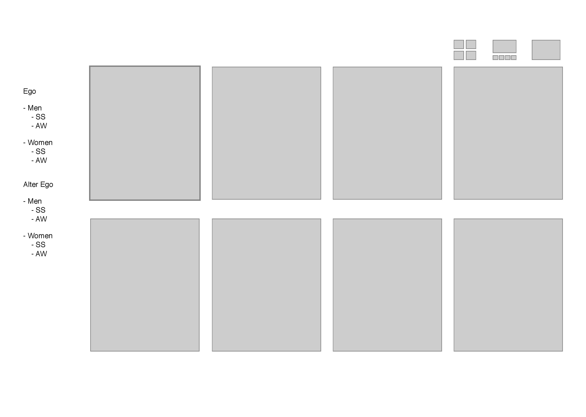
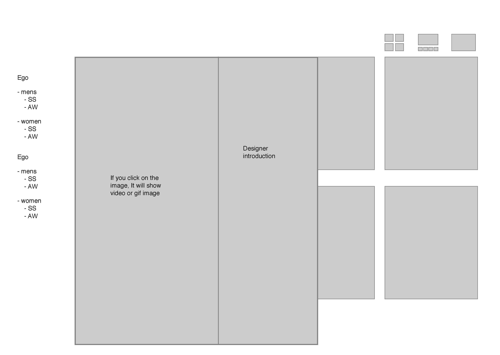
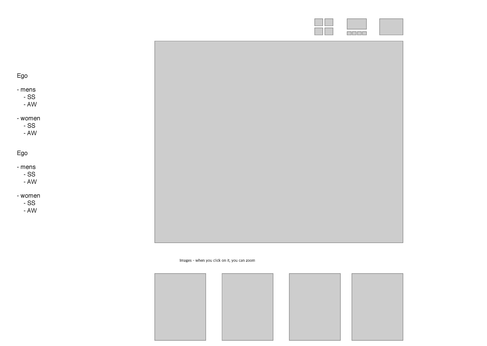
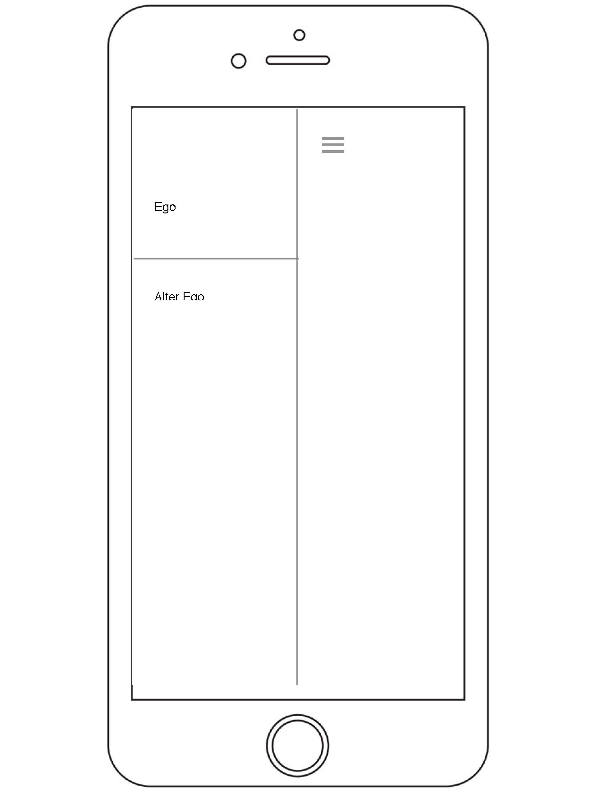
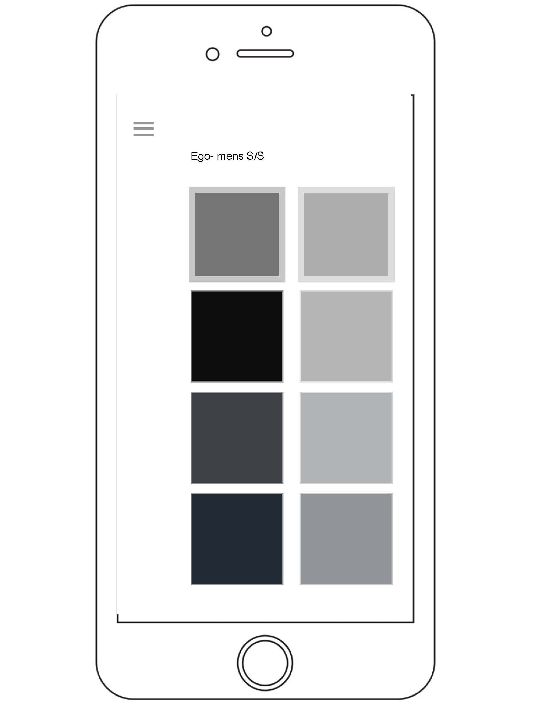

Wire frame experience
I had to use this application called "Sketch". It is an amazing tool for designers to put ideas together. It was hard first time but it becomes easier to use once I got used to it. My theme is my ego and alter ego fashion inspiration and basically it will embrace collections from different brands. I made this simple layout by using sketch.
This is the main page where you can go on an either one of two sections.

Here, It is showing click through, clicking on the first picture, upper left.

After you click on it, the image is enlarged and it will show a short clip of video of runway collection and there is a short introduction of the designer on the side.

There are three small icons on the upper right side and they are different formats of layout for images. For this layout, if you click on an image , the images is shown up in the middle.
This is the mobile version of the website. The main page is just screen and if you move to another page, you have to click on the menu bar on the upper left side.

If you click on the menu bar, you can choose one from sections and it will lead to the page of images on the section.

Images will be shown. Unfortunately, you are not able to change how images are shown due to the small screen size.